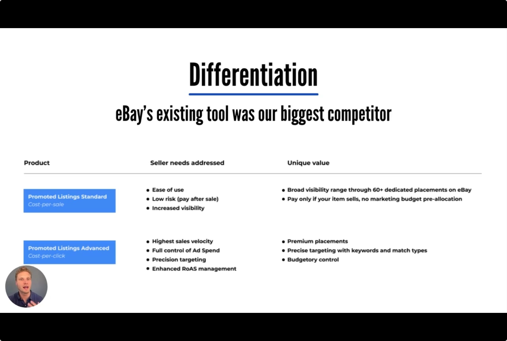
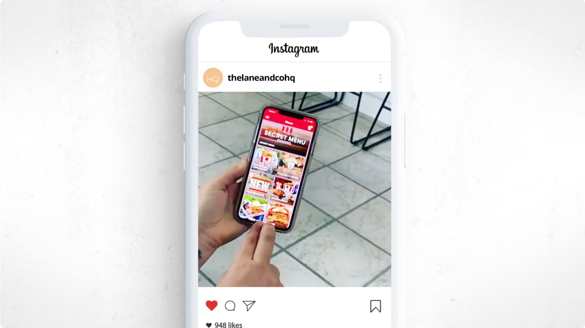
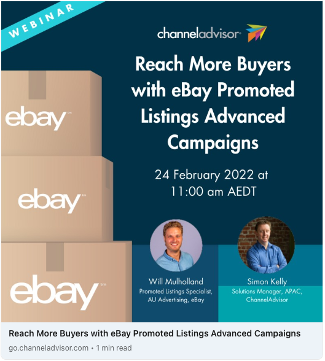
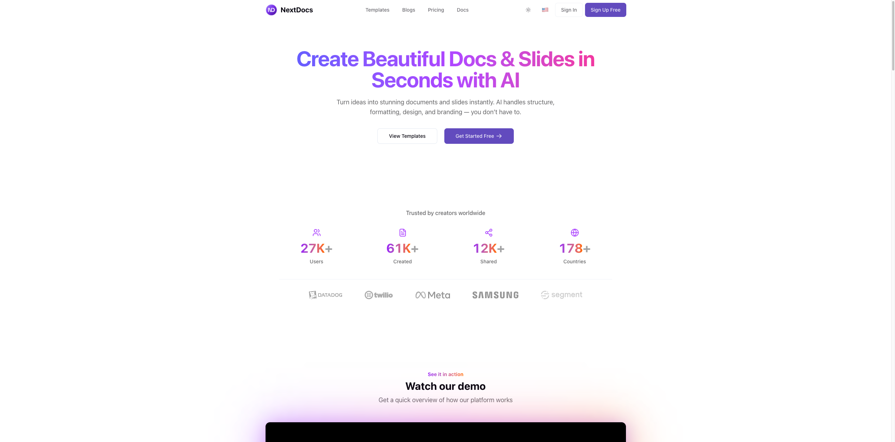

GTM strategy, product launches, campaign development, and sales enablement across B2B and B2C. Ordered by impact.
Most marketers use AI as a writing tool. I use it as an operating system. One person operating with the context of a full team.
The bottleneck in PMM isn't writing speed, it's context. Knowing what shipped, what customers said, what competitors changed, what the sales team is struggling with. That context is scattered across Slack, meeting transcripts, CRM notes, and product docs.
I build systems that pull all of that together automatically. Semantic search across thousands of documents. Daily briefings generated from meeting transcripts and Slack. Competitive monitoring that flags changes before I have to look for them.
This isn't about replacing thinking with AI. It's about eliminating the hours of context-gathering that sit between you and the actual work. The diagnostic, the positioning, the launch plan, the CEO briefing: that's the real work. Everything else is infrastructure, and infrastructure should be automated.
How do you launch unproven ad tech to skeptical enterprise buyers and drive global adoption? I led the launch of eBay's Promoted Listings Advanced from beta to core revenue driver, attracting 2,500+ brands and contributing to eBay's $1B ads milestone.

I led the launch of Promoted Listings Advanced, a new advertising product targeting larger eBay sellers and brands. Five products, 2,500+ active brands, $300M+ collective revenue across the ads portfolio.
"That launch exemplified our ability to work without global support, communicating new tools to the market and reeducating sellers on complex concepts. The product evolved rapidly, expanding from just the top spot of search to the whole first page and in-listing pages. This constant evolution required ongoing education of our seller base, adapting our messaging and support as the product grew and changed."
Senior Product Marketing Manager, eBay
KFC's mobile app had 20% retention with zero marketing budget to fix it. I turned staff menu hacks into a hidden discovery feature that required holding the app logo for 11 seconds to unlock. Users created 1,000+ tutorials teaching each other how to find it.

At Ogilvy for KFC Australia, the mobile app had 20% retention. Users downloaded for discounts then deleted immediately. Zero marketing budget to fix it. I discovered frontline staff creating unofficial menu items internally (like "Beese Churger," "Nug-a-Lot"). The creative team proposed hiding these behind an 11-second logo hold tied to "11 herbs and spices."
67% of Secret Menu orders included additional full-price items. $0 media spend.
How do you rescue a struggling enterprise integration and drive adoption among 2,000+ potential users? One strategic webinar with ChannelAdvisor drove 50% adoption and $250K in attributed revenue.

I led a collaborative webinar with ChannelAdvisor to drive adoption of our Promoted Listings product through their new API integration. Despite having a robust API integration, adoption and revenue among sellers was unexpectedly low.
Strengthened partnership leading to more joint initiatives including a newsletter.
Blinq's event lead capture product had 1,715 workspaces but 81% had zero credit usage. No onboarding, no documentation, no structured handoff from sales. I ran a full diagnostic and built the GTM plan that became the company's #1 priority.
Blinq had shipped a full event lead capture product (scanner + AI enrichment + CRM sync + campaigns) but had no go-to-market motion behind it. I pulled the usage spreadsheet (2,238 rows, 1,715 workspaces) and mapped the actual distribution. Then ran 10+ stakeholder interviews across sales, customer success, and growth.
Before writing a single asset, I ran the diagnostic:
Built an 8-initiative GTM plan sequenced by what would unblock the most downstream:
The diagnostic became the company's top priority. CEO adopted the GTM plan as the roadmap for Event Lead Capture, shifting from demand gen to activation-first. Shipped all 8 initiatives within the first quarter.
Blinq's AI Notetaker records in-person conversations and saves notes to contacts. Useful for sales reps and networkers, but immediately triggers legal concerns. I ran the full launch: CEO briefing, blog, segmented email campaigns, and paid content strategy.
The AI Notetaker needed a launch that was honest about what it does and who it's for, without killing the message. The story needed to come from the person who built it. The consent narrative wasn't part of the initial plan, but it needed to be front and centre.
Nobody could explain what "Campaigns" did. Not sales, not product, not even a B2B SaaS competitor who tested it. I built the messaging house first, then launched with video, EDM, LinkedIn, and a sales one-pager off one messaging spine.
Campaigns shipped to public beta but the content team was blocked on the video script and sales needed a one-pager. The real problem: no one could clearly explain what the product did. Feedback from a competitor: "I never understood what campaigns is." This was a messaging problem before it was a content problem.
You're the first marketing hire at a SaaS startup with a complex product, unclear positioning, and 500 users. How do you find product-market fit and drive 300%+ growth?
Tasked with figuring out positioning and driving growth for Rephonic, a podcast analytics platform. Complex product with numerous features, diverse target audience, unclear messaging, limited budget, and a 5% trial-to-paid conversion rate.
Improved 3-month retention from 60% to 75%. Grew from 500 to 2,000 active users.
How do you enable a 67% smaller sales team to effectively communicate evolving ad tech to sceptical enterprise buyers? Built systematic enablement that drove deeper customer conversations.
I developed a modular deck to help our GTM team communicate our advertising products to diverse sellers. This was crucial after our sales team was reduced from 18 to 6 members, including 4 new hires unfamiliar with our products.
(Slides unavailable due to eBay's privacy restrictions)
"Having all the information in one place made my job easier. I still go back and use those documents from time to time. The content we created for RetailFest led to more one-on-one sessions with sellers. It sparked their interest and gave them a reason to ask more in-depth questions."
Sales Team Member, eBay
"Will was responsible for all sales enablement content for the local team, which was critical to their success. The case studies were particularly impressive, involving a complex process of data collection, seller participation, testimonial gathering, and legal approval. Since new product features were often tested and launched in Australia first, Will had to manage creating the first iterations of that content globally."
Senior Product Marketing Manager, eBay
How do you ensure customer insights reach global product teams and drive roadmap decisions? I created the APAC Ads Feedback Newsletter bridging local sellers and global product teams.
I created and managed a monthly APAC Ads Feedback Newsletter to bridge the gap between APAC sellers and global product teams, ensuring valuable insights were effectively communicated and acted upon.
"The feedback process Will set up through the newsletter helped us get alignment on what we were working on. It was helpful from a product standpoint to get a pulse on user feedback because it gave us a more comprehensive view of what was going on with users. It was valuable because it confirmed hypotheses we had, particularly around features like Quick Setup."
Senior Product Manager, David Lyons, eBay
"The newsletter Will built was valuable for building relationships with leadership and product globally, putting our team on the map, and creating a structured feedback loop. It set the foundation for future product improvements."
Senior Product Marketing Manager, eBay
What does it take to secure enterprise contracts in conservative compliance environments? Built NextDocs for Malaysian ESG reporting and navigated procurement across 20+ public companies.

Co-founder driving enterprise sales strategy and regulatory partnerships.